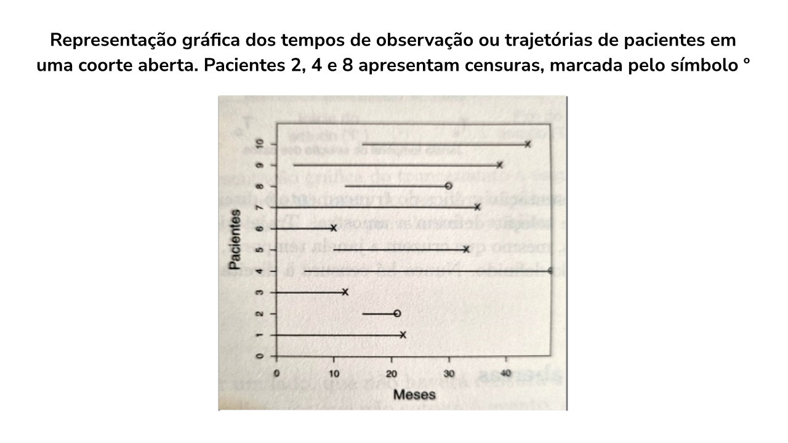
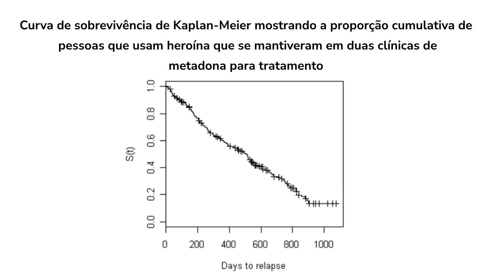
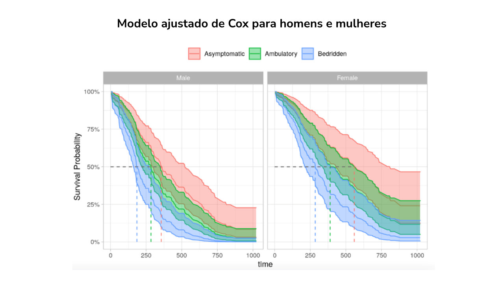

Módulo 3 | Aula 3
Dados com estruturas de dependência: multiníveis, séries temporais e espaciais e sobrevida
Modelos de Sobrevivência
São métodos estatísticos utilizados para analisar o tempo até a ocorrência de um evento de interesse, como morte, recorrência de uma doença, tempo de hospitalização ou qualquer outro desfecho clínico. Exemplo: estamos observando um grupo de pacientes e queremos entender quanto tempo leva até que um evento clínico ocorra. Os modelos de sobrevivência ajudam a estimar não apenas a probabilidade de um evento ocorrer, mas também quando ele provavelmente acontecerá.
Alguns exemplos de perguntas de interesse que podem se beneficiar da análise de sobrevida:
pan_tool_alt CliqueToque e arraste os cards para conhecê-los.
Os principais componentes desses modelos são:
- Evento de interesse: morte, alta hospitalar, recidiva de uma doença etc.
- Tempo até o evento: variável principal, que representa o tempo em dias, meses, anos, até que o evento ocorra.
- Censura: muitos pacientes podem não apresentar o desfecho de interesse até o fim do estudo — estes são chamados de “censurados”. Tais dados são mantidos na regressão até quando temos informações dos indivíduos. Exemplo: no estudo em que se objetiva estimar o tempo entre o diagnóstico de HIV e óbito, pacientes que até o fim do estudo não faleceram, são ditos indivíduos censurados.
Na figura a seguir temos a representação gráfica dos tempos de observação ou trajetórias de pacientes em uma coorte aberta. Pacientes 2, 4 e 8 apresentam censuras.

Modelos clássicos usados para séries temporais:
Curva de Kaplan-Meier
Método simples para estimar a probabilidade de sobrevivência ao longo do tempo. Ela gera uma curva de sobrevivência, que mostra a proporção de pacientes que ainda não experimentaram o evento em diferentes pontos do tempo.
O método Kaplan-Meier baseia-se nos tempos de sobrevivência individuais e assume que a censura é independente do tempo de sobrevivência (ou seja, o motivo pelo qual uma observação é censurada não está relacionado ao desfecho). O estimador Kaplan-Meier de sobrevivência no tempo t é dado por:
Em que:
- tj para j=1,...,n é conjunto de tempos até o desfecho registrado (com t+ o tempo máximo de falha).
- dj é o número de desfechos observados (morte para pacientes com câncer submetidos a um tratamento específico). at é o erro no tempo t, de média zero e variância σa2.
- rj é o número de indivíduos em risco no tempo tj.
Exemplo
A figura abaixo mostra, ao longo do tempo, uma curva de sobrevivência de Kaplan-Meier com a proporção cumulativa de pessoas que usam heroína em duas clínicas de metadona para reabilitação. A taxa de perda de pacientes ao longo do tempo é relativamente constante e aproximadamente 15% permanecem em tratamento até 1.000 dias após a admissão.

Modelo de Regressão de Cox
Usado para identificar fatores de risco que afetam o tempo de sobrevivência, considerando variáveis preditoras (ex.: idade, sexo, comorbidades). Ele mede o impacto de cada variável na taxa de risco (hazard rate). Com o modelo de riscos proporcionais de Cox, o resultado é descrito em termos de taxa de risco. O modelo de Cox é dado por:
Em que:
- Xi são as variáveis de risco como idade, sexo, nível educacional.
- βi são es coeficientes estimados para Xi
- h0(t) é chamado de função de risco de linha de base (se todos os x forem zero, então hi(t) = h0(t))
Esta expressão fornece a função de risco no tempo t para o sujeito i com vetor covariável (variáveis explicativas) Xi. Observe que, entre os sujeitos, o risco de linha de base h0(t) não depende de i, isto é, é o mesmo para todos os indivíduos. A única diferença entre os riscos dos sujeitos vem do fator de escala da linha de base exp (β1Xi1 + β2Xi2 + ... + βkXik)
Exemplo
Análise das diferenças na mortalidade por todas as causas entre homens e mulheres com diagnóstico de câncer de pulmão avançado. Foram acompanhados 227 participantes, com idades entre 39 e 82 anos, por até três anos até o momento do óbito. Os participantes foram segmentados em três grupos, de acordo com a pontuação de desempenho do ECOG: Assintomáticos, Sintomáticos, mas completamente Ambulatórios, e Acamados pelo menos parte do dia. A idade e o sexo dos participantes foram capturados como covariáveis de controle. Na figura a seguir observamos o efeito gradiente do desempenho do ECOG e que ser mulher aumenta a sobrevida.

Faça você mesmo!
É hora de praticar! No script modulo3aula3_atividades.R (Atividade 3), construa curvas de Kaplan-Meier para comparar sobrevida entre tratamentos, aplique o teste Log-Rank e ajuste um modelo de Cox para identificar fatores de risco.